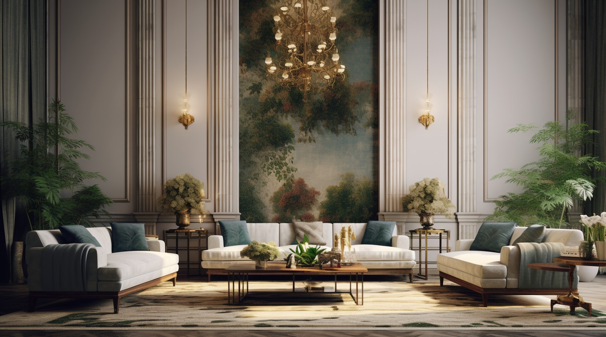
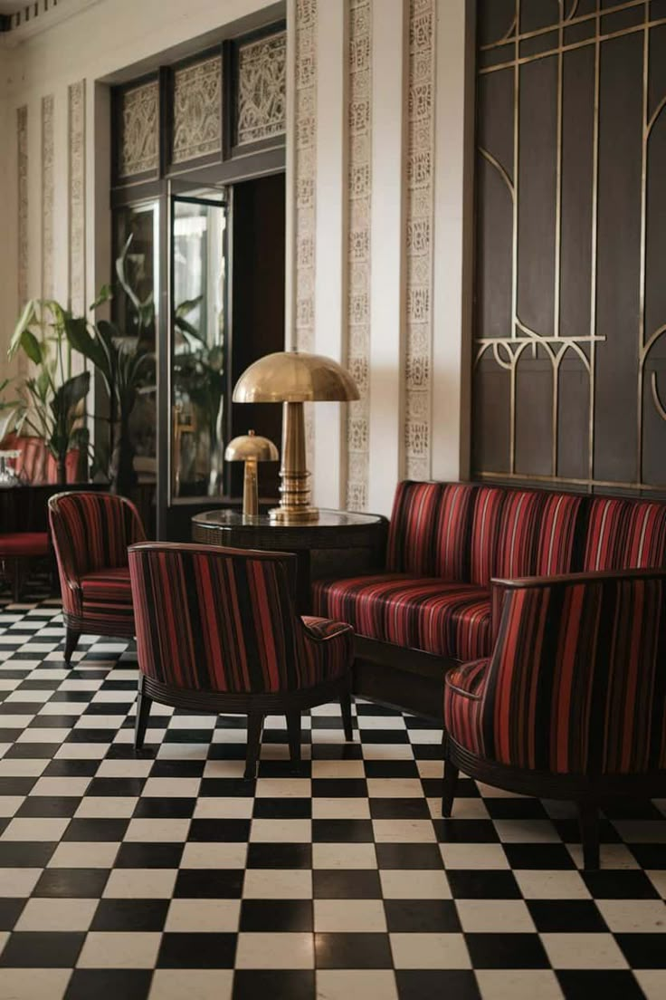
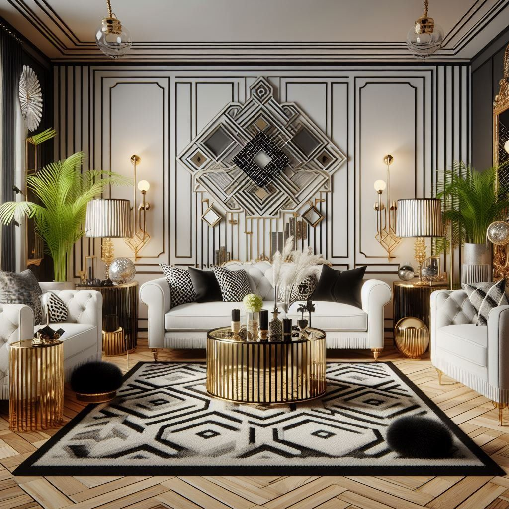

Арт-деко

Основная цветовая гамма
Черный, золотой, серебряный, изумрудный, бордовый, мраморные оттенки
Краткое описание стиля
Воплощение роскоши, гламура и богемной жизни 1920-30-х годов. Узнается по четким геометрическим формам, зигзагообразным узорам, использованию дорогих материалов (мрамор, бархат, латунь) и обязательным зеркалам в виде солнечных лучей.
Разновидности арт-деко
| № | Разновидность стиля | Фото дизайна | Краткое описание |
|---|---|---|---|
| 1 | Нео-арт-деко |  |
Современное прочтение стиля: геометрия и роскошь сохраняются, но появляется больше воздуха и сдержанности. Актуально для сегодняшних квартир. |
| 2 | Голливудский гламур |  |
Максимально театральная версия. Черно-белая гамма, меха, леопардовые принты, хрусталь. Роскошь старого Голливуда. |